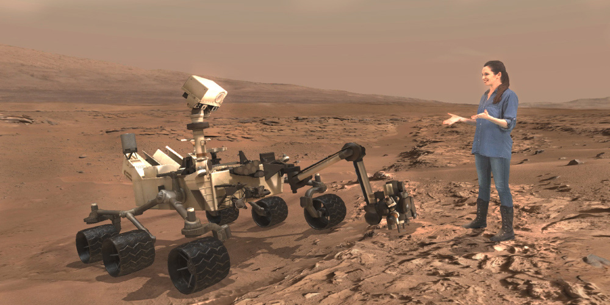

mars curiosity rover
NASA'S MARS EXPLORATION PROGRAM
The goal of the Mars Exploration Program is to explore Mars and to provide a continuous flow of scientific information and discovery through a carefully selected series of robotic orbiters, landers and mobile laboratories interconnected by a high Mars Earth communications network.
mission summary
TIMELINE
Launch:
Nov. 26.2011
Landed:
Aug. 5.2012
Mission duration:
2012 Present
highlights row image
RAW DATA IMAGES
NASA's Curiosity rover has captured its highest resolution panorama yet of the Martian surface. Composed of more than 1,000 images taken during the 2019 Thanksgiving holiday and carefully assembled over the ensuing months, the composite contains 1.8 billion pixels of Martian landscape. The rover's Mast Camera, or Mastcam, used its telephoto lens to produce the panorama; meanwhile, it relied on its medium-angle lens to produce a lower-resolution, nearly 650-million-pixel panorama that includes the rover's deck and robotic arm.
MARS WEATHER
InSight is taking daily weather measurements ( temperature, wind, pressure ) on the surface of Mars at Elysium Planitia, a flat, smooth plain near Mars
Sol 3041
February 24
-12°C
high
-72°C
low
DID YOU KNOW?
Curiosity Rover is big as an SUV
One thing that makes Curiosity stand out is its sheer size: Curiosity is about the size of a small SUV. It is 9 feet 10 inches long by 9 feet 1 inch wide (3 m by 2.8 m) and about 7 feet high (2.1 m). It weighs 2,000 lbs. (900 kilograms). Curiosity's wheels have a 20-inch (50.8 cm) diameter.